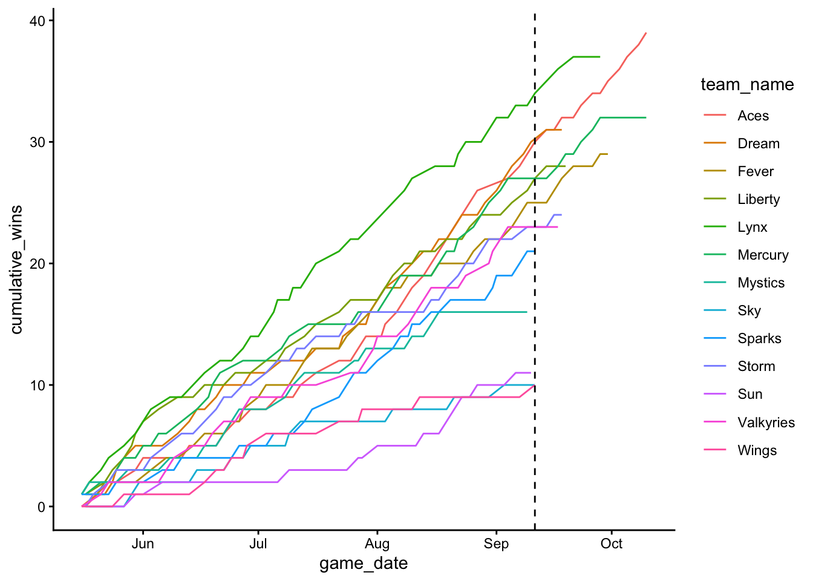
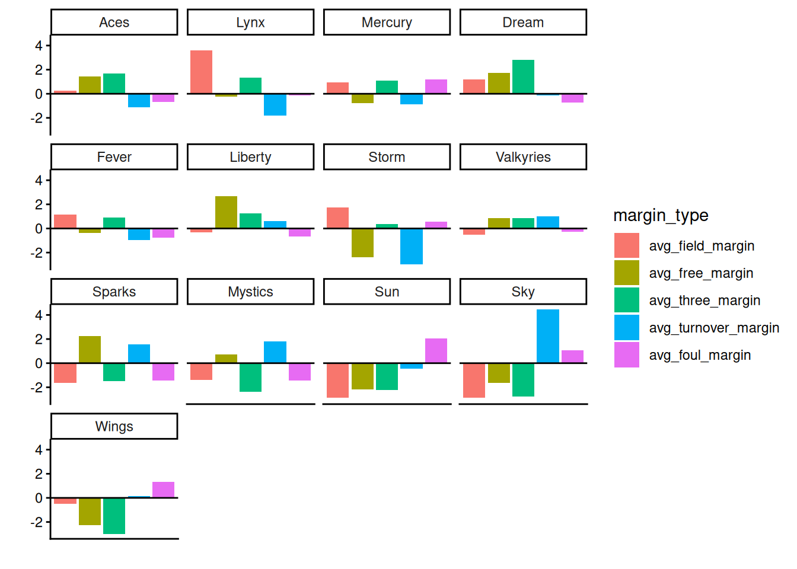
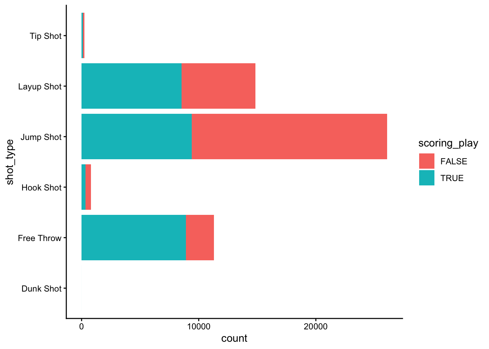

Cate S.
Player Dataset
dimensions:
First, I looked at the league’s best players. I made a new dataset with the average stats for each player and ordered it by the most points per game.
Code
# find the league's best players
top_players <- wnba_player_box %>%
group_by(athlete_display_name) %>%
summarize(
avg_ppg = mean(points, na.rm = TRUE),
avg_blocks = mean(blocks, na.rm = TRUE),
avg_rebounds = mean((offensive_rebounds + defensive_rebounds), na.rm = TRUE),
avg_assists = mean(assists, na.rm = TRUE),
avg_steals = mean(steals, na.rm = TRUE),
)
top_players %>%
arrange(desc(avg_ppg)) %>%
head(10)# A tibble: 10 × 6
athlete_display_name avg_ppg avg_blocks avg_rebounds avg_assists avg_steals
<chr> <dbl> <dbl> <dbl> <dbl> <dbl>
1 A'ja Wilson 23.8 2.30 9.98 3.09 1.70
2 Napheesa Collier 22.6 1.4 7.32 3.02 1.58
3 Kelsey Mitchell 20.4 0.167 1.70 3.31 0.907
4 Kelsey Plum 19.4 0.0909 3.11 5.68 1.23
5 Paige Bueckers 18.9 0.486 3.89 5.46 1.54
6 Dearica Hamby 18.4 0.477 7.93 3.27 1.57
7 Allisha Gray 18.2 0.370 5.39 3.39 1.04
8 Nneka Ogwumike 18.1 0.375 7.15 2.29 1.08
9 Breanna Stewart 17.9 1.29 6.4 3.4 1.31
10 Sabrina Ionescu 17.9 0.452 4.83 5.64 1.17 A’ja Wilson led the league in scoring. In addition to playing for the championship team, the Las Vegas Aces, she was also named MVP.
Team Dataset
dimensions:
I made running counts of each teams wins and losses so that their records could be determined at any point in the season. I made a visualization showing the cumulative wins for each team over the course of the season.
Code
# determine records for each team
wnba_team_records <- wnba_team_box %>%
filter(team_name != "TEAM CLARK", team_name != "TEAM COLLIER") %>% # remove All Star teams
mutate(
win = ifelse(team_winner == TRUE, 1, 0),
loss = ifelse(team_winner == FALSE, 1, 0)
) %>%
group_by(team_name) %>%
arrange(team_name, game_date) %>%
mutate(
cumulative_wins = cumsum(win),
cumulative_losses = cumsum(loss),
record = paste0(cumulative_wins, "-", cumulative_losses),
win_pct = cumulative_wins/(cumulative_wins + cumulative_losses)
) %>%
ungroup() %>%
mutate(team_color = paste0("#", team_color))Code

The black line represents the end of the regular season and beginning of the playoffs. The lines for each team end at varying points, depending on when they were eliminated. The Minnesota Lynx had the best record throughout the regular season, but then they were eliminated in the semi-finals. The Aces struggled in the first half of the season but then went on a massive winning streak which took them to the championships.
Next, I found the teams that led the league in various shot percentages.
Code
# determine teams with the best avg shot percentages
shot_percentages <- wnba_team_records %>%
select(field_goal_pct, free_throw_pct, three_point_field_goal_pct, team_name) %>%
group_by(team_name) %>%
summarise(
avg_field_goal = mean(field_goal_pct),
avg_free_throw = mean(free_throw_pct),
avg_three = mean(three_point_field_goal_pct),
)
shot_percentages %>%
select(team_name, avg_field_goal) %>%
arrange(desc(avg_field_goal)) %>%
slice(1)# A tibble: 1 × 2
team_name avg_field_goal
<chr> <dbl>
1 Lynx 46.8Code
# A tibble: 1 × 2
team_name avg_free_throw
<chr> <dbl>
1 Liberty 82.5# A tibble: 1 × 2
team_name avg_three
<chr> <dbl>
1 Lynx 36.7These shooting stats support the finding from the previous plot that the Lynx had the best regular season record.
As a way of comparing how each team typically matched up against their opponents, I calculated the margins for various stats. I then took the averages and displayed the teams with the highest field goal, free throw, and three pointer margins and lowest turnover and foul margins.
Code
# determine game margins for different performance stats
margins <- wnba_team_records %>%
group_by(game_id) %>%
mutate(
field_margin = field_goals_made - rev(field_goals_made),
free_margin = free_throws_made - rev(free_throws_made),
three_margin = three_point_field_goals_made - rev(three_point_field_goals_made),
turnover_margin = turnovers - rev(turnovers),
foul_margin = fouls - rev(fouls)
) %>%
ungroup() %>%
select(game_id, team_name, field_margin, free_margin, three_margin, turnover_margin, foul_margin) %>%
arrange(game_id)
# calculate average margins by team
margin_avgs <- margins %>%
group_by(team_name) %>%
summarize(
avg_field_margin = mean(field_margin),
avg_free_margin = mean(free_margin),
avg_three_margin = mean(three_margin),
avg_turnover_margin = mean(turnover_margin),
avg_foul_margin = mean(foul_margin)
)
margin_avgs_pivoted <- margin_avgs %>%
pivot_longer(
cols = c(avg_field_margin, avg_free_margin, avg_three_margin, avg_turnover_margin, avg_foul_margin),
names_to = "margin_type",
values_to = "margin_value"
) %>%
mutate(
margin_type = fct_relevel(margin_type, "avg_field_margin", "avg_free_margin", "avg_three_margin", "avg_turnover_margin", "avg_foul_margin")
)
margin_avgs %>%
select(team_name, avg_field_margin) %>%
arrange(desc(avg_field_margin)) %>%
slice(1)# A tibble: 1 × 2
team_name avg_field_margin
<chr> <dbl>
1 Lynx 3.59Code
# A tibble: 1 × 2
team_name avg_free_margin
<chr> <dbl>
1 Liberty 2.66Code
# A tibble: 1 × 2
team_name avg_three_margin
<chr> <dbl>
1 Dream 2.83Code
# A tibble: 1 × 2
team_name avg_turnover_margin
<chr> <dbl>
1 Storm -2.98# A tibble: 1 × 2
team_name avg_foul_margin
<chr> <dbl>
1 Mystics -1.43It is interesting to see a variety of teams represented in these stats. It make sense that the Lynx had the greatest field goal margin given that they had the best record.
These faceted bar plots display the average game margins of these stats for each team.
Code

The best teams in the league, such as the Lynx, Aces, Dream, and Mercury generally have positive scoring margins and lower or negative turnover and foul margins. The worst teams in the league, such as the Sun, Sky, and Wings display the opposite trends.
Play-By-Play Dataset
For the play-by-play dataset, I made a variable for the type of shot.
Code
# create shot type variable
wnba_pbp <- wnba_pbp %>%
filter(shooting_play) %>%
mutate(shot_type = case_when(
str_detect(type_text, "Jump Shot") ~ "Jump Shot",
str_detect(type_text, "Layup Shot") | str_detect(type_text, "Layup") ~ "Layup Shot",
str_detect(type_text, "Free Throw") ~ "Free Throw",
str_detect(type_text, "Hook Shot") | str_detect(type_text, "Hook") ~ "Hook Shot",
str_detect(type_text, "Tip Shot") ~ "Tip Shot",
str_detect(type_text, "Dunk") ~ "Dunk Shot"
)) This barplot displays the frequencies of different shot types, differentiated by whether or not the shot was made.
Code

Jumpshots are by far the most common shot, but they are not the easiest to make. Free throws and layups, which make up the majority of the rest of shots, are easier to make.